Fortinet Enterprise Networking & Security Daily Study Report
Run Status — SUCCESS
The pre-generation exclusion inventory was committed before lessons were written. Twelve semantically distinct primary-documentation lessons were produced, twelve editable draw.io files and twelve standalone SVG teaching diagrams were written, and the exam contains exactly 50 graded multiple-choice questions with per-choice feedback. Community material is used only as operational/scenario evidence; primary lessons are anchored in Fortinet documentation. Repository read-back and index read-back are performed after publication. Public Pages verification is reported separately and is not inferred from repository success.
Discovery / exclusion result
The prior-30-day inventory excluded recent mechanisms including NAT64/DNS64, automation stitches, FortiCloud SSO HA, FortiManager metadata/trusted-host/device-identification/policy-block mechanisms, FortiAnalyzer log fetch/HA/event handlers/datasets/forwarding, FortiSwitch EVPN/DHCP snooping/MCLAG/FortiLink/storm-control, FortiAP WPA3/airtime/roaming/CAPWAP, NAC guest/isolation/profiling/API/CoA/compliance, FAC accounting/EAP-TLS/SAML/SCIM/FIDO2, PAM SSH filtering/web proxy/checkout/revocation/password changers, SIEM UEBA/CMDB/maintenance/run-enforce, SASE posture/endpoints/ZTP/SPA, and SD-WAN SLA/ADVPN/community/underlay bandwidth. Today therefore moves to different transaction fingerprints rather than merely different URLs. Machine-readable inventory.
1. FortiGate — Security Fabric IPAM: allocation is a control-plane workflow, not just DHCP
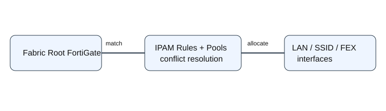
Editable diagram · Primary Fortinet documentation
FortiOS IPAM centralizes subnet assignment for interfaces that would otherwise require an administrator to choose address space manually. The important design boundary is that IPAM is configured from a standalone FortiGate or the root FortiGate of a Security Fabric. The configuration is separated into settings, rules, interfaces, and subnets. That separation matters operationally: enabling the feature does not itself prove that a particular interface matched a rule or received the intended subnet.
The transaction is: an eligible interface appears to the root IPAM authority; FortiOS evaluates IPAM rules; a rule selects address space from the configured subnet model; the allocation is associated with the interface; conflict logic can reject or resolve an overlap depending on policy. Options such as Auto-resolve conflicts and Require subnet size match alter allocation behavior, while eligibility can include LAN-role interfaces, FortiAP SSIDs, and FortiExtender LAN extensions. An engineer therefore verifies the rule, candidate pool/subnet, interface eligibility, and resulting allocation as separate states.
A common troubleshooting error is to begin with DHCP clients. Client DHCP failure is downstream evidence and cannot prove that IPAM selected the correct subnet. First verify IPAM state at the root, then the interface address/subnet, then DHCP. In HA or Fabric designs, also establish which node owns configuration authority before treating a member's local view as authoritative. Today’s Community sweep also found FortiOS 7.6.7 operational changes and certificate/import issues; these are retained as scenario intelligence rather than substituted for this primary feature lesson.
2. FortiManager — Workspace locks define the write-consistency boundary
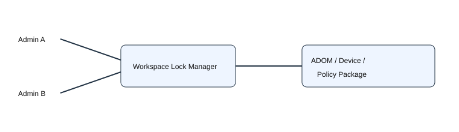
Editable diagram · Primary documentation · Current scenario
Workspace mode is FortiManager’s concurrency-control mechanism. With workspace disabled, multiple administrators can alter an ADOM concurrently. With workspace enabled, an administrator must acquire the appropriate lock before changing an ADOM, device, or policy package. Device and policy-package granularity allows separate administrators to work in the same ADOM, but operations that create broader objects can require the whole ADOM lock. Advanced ADOM device modes impose additional restrictions.
The operational sequence is lock → modify FortiManager’s database → inspect/preview → install to managed devices → unlock. A lock proves exclusive edit ownership; it does not prove the managed FortiGate has received the change. Conversely, an install-wizard list is driven by modification/out-of-sync state, not merely device membership. Fortinet’s September 23 Community article is useful here: a device appears under Install Device Settings only when device configuration, policy package, or assigned template state is modified/out of sync. That distinction prevents confusing “not listed for install” with “FortiManager cannot manage the device.”
For incidents, capture lock owner/scope, database modification state, policy/template status, install preview, and post-install device state. Breaking another administrator’s lock should be a controlled recovery action because it changes the concurrency boundary; it is not a generic cure for install problems.
3. FortiAnalyzer — Log integrity and transport confidentiality prove different things
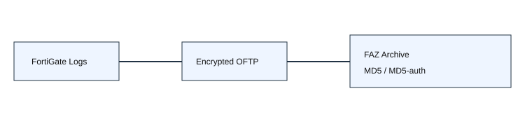
Editable diagram · Primary documentation · Current scenario
FortiAnalyzer separates secure transport from post-receipt log integrity. Fortinet devices send logs using encrypted OFTP; FortiAnalyzer can additionally create a checksum when a log file rolls. The global log-checksum setting supports none, md5, and md5-auth. MD5 records a hash; MD5-auth adds an authentication code. This evidence is visible in FortiAnalyzer event logs and CLI.
config system global
set log-checksum md5-auth
endEncryption answers whether the transport is protected in transit. A recorded checksum answers whether a rolled file’s contents match the recorded integrity value. Neither proves that every expected source event was generated. For that, the engineer still needs source logging policy, device authorization, ingestion state, and log-phase awareness. FortiAnalyzer moves data through real-time/archive/analytics states, so SQL visibility can lag raw receipt.
The September 23 hcache article provides a useful adjacent diagnostic boundary: high CPU driven by sqllogd and database processes can result from report/FortiView hcache backlog, not ingestion. diagnose test application sqlrptcached 2 exposes pending report and FortiView cache tasks. Thus CPU pressure, log transport, indexing, reporting cache, and file integrity are distinct evidence domains.
4. FortiSwitch — sFlow is sampled observability, not packet accounting
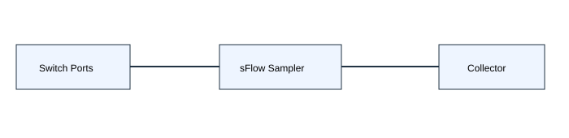
Editable diagram · Primary documentation
sFlow gives a collector statistical visibility into switch traffic by exporting sampled packet information and counters. The switch is the sampling agent; monitored interfaces contribute samples; a configured collector receives exported telemetry. Because sampling is intentional, absence of one particular packet in the collector is not evidence that the switch did not forward it. This is the core troubleshooting distinction from SPAN/packet capture.
Verification proceeds from configuration to export path: confirm sFlow is enabled where intended, confirm agent/source identity and collector address/port, inspect sampling/counter settings, verify UDP reachability, then verify records arriving at the collector. If interface counters increase but the collector is empty, investigate export configuration/routing before blaming the forwarding ASIC. If records arrive but a low-frequency flow is absent, consider sampling probability rather than declaring packet loss.
At scale, choose sampling rates that preserve useful visibility without excessive export/collector load. sFlow is well suited to trend, top-talker and broad traffic-distribution questions; deterministic forensic reconstruction requires other evidence. That mechanism is intentionally distinct from yesterday’s private-VLAN lesson and recent storm-control, DHCP-snooping, MCLAG and EVPN coverage.
5. FortiAP — WIDS rogue detection combines RF observation with wired evidence
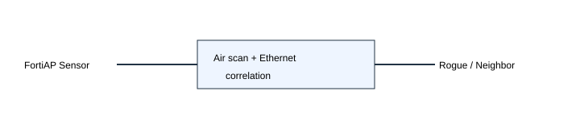
Editable diagram · Primary documentation
A WIDS profile controls wireless intrusion detection behavior and is applied to a radio through the FortiAP profile. Rogue scanning can use foreign channels or both foreign and home channels. When sensor mode and rogue detection are enabled together, on-wire detection can correlate a radio-observed AP with Ethernet-side evidence. That correlation is what makes “neighbor AP” and “rogue connected to my network” different conclusions.
config wireless-controller wids-profile edit "corp-wids" set ap-scan enable set rogue-scan enable next end
Background scan period, interval, duration and idle thresholds trade RF coverage against serving-radio airtime. Fortinet also exposes MAC adjacency tuning because the Wi-Fi and Ethernet MACs of the same device may differ. An overly strict adjacency can miss correlation; an overly broad value can increase false association. Auto-suppression should therefore follow validated classification, not simply the presence of an unknown BSSID.
During troubleshooting, prove that the intended WIDS profile is bound to the actual radio, confirm scanning state, inspect rogue/neighbor classification, then test wired correlation. A radio scan proving that a BSSID exists does not prove it is attached to the protected LAN. Likewise, a quiet rogue table can mean no rogues, disabled scanning, insufficient channel coverage, or failed correlation.
6. FortiNAC — Aging is database lifecycle control, not live reachability
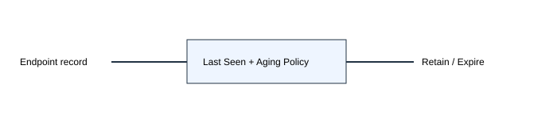
Editable diagram · Primary documentation
FortiNAC User/Host Management includes aging controls that determine how long user and host records remain in the database. This is separate from connection-state detection and from policy enforcement. A stale record can survive after a device disappears if the aging policy retains it; an aggressively aged record can disappear even though the physical endpoint later reconnects and is rediscovered.
Operationally, think in states: observation creates or updates a host record; last-seen and related lifecycle attributes advance; aging policy evaluates the record; the database retains or expires it. Before deleting “duplicate” or “stale” entries manually, establish whether they represent different MACs, registrations, users, or legitimate historical state. The evidence to collect is the host record, last-seen/connection history, registration ownership, and configured aging thresholds.
Aging is especially important in environments with transient BYOD/guest devices because indefinite retention inflates inventory while short retention erases useful attribution history. The correct threshold follows operational identity requirements, not a generic cleanup interval. This lesson is distinct from recent compliance, guest registration, HA and profiling lessons.
7. FortiNAC-F — Device Profiler is an ordered evidence-to-classification engine
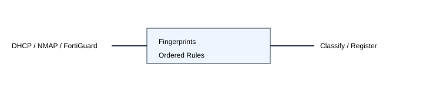
Editable diagram · Primary documentation · Current operational scenario
Device Profiler classifies rogue devices using ordered rules. Each rule contains classification settings and one or more evaluation methods; methods produce pass/fail outcomes and a passing rule assigns classification/registration behavior. Inputs can include DHCP fingerprints, active NMAP observations, FortiGuard IoT data and other methods. The order matters because classification stops on the applicable match rather than combining every possible rule into an abstract score.
A crucial failure mode is missing evidence. FortiNAC-F can generate a “Device Profiling Rule Missing Data” event when it lacks information such as a DHCP fingerprint; it then cannot compare the rogue to that rule as intended. Therefore a misclassified device is not automatically a bad rule. Verify the fingerprint source first, then method results, then rule order, then classification action.
Today’s Community article about LiveOS storage is a separate operational boundary worth remembering: /run/rootfsbase at 100% is expected for the read-only SquashFS image; writable capacity is represented by the overlay and persistent /storage. Do not “fix” the packed base image. That scenario is not the primary profiling lesson, but it reinforces evidence discipline: interpret the object being measured before remediating it.
8. FortiAuthenticator — Self-service portal policy selects identity and factor workflow
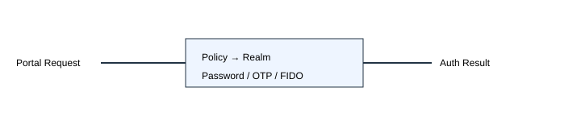
Editable diagram · Primary documentation · Current scenario
Self-service portal policies bind a portal to identity sources, username/realm interpretation, group filters, authentication factors and advanced controls. Policy matching precedes credential validation. That means a perfectly valid password can fail operationally because the request matched the wrong portal policy or realm, or because the selected policy requires a factor the user cannot satisfy.
Factor modes include mandatory password+OTP, conditional password+OTP, password-only and OTP-only, with FIDO options and adaptive authentication for trusted subnets in supported modes. Troubleshooting should therefore record the matched policy, normalized username/realm, selected identity source, first-factor result, challenge state and second-factor result.
The September 23 IKEv2 article provides an excellent transaction example outside the portal itself: password validation can succeed, FortiAuthenticator can send an Access-Challenge, FortiClient can return EAP-GTC token data, yet FAC can reject because the partial-authentication context is unavailable for that EAP flow. Fortinet recommends EAP-TTLS where possible and documents an explicit option for OTP with EAP-MSCHAPv2. The lesson is to debug the authentication transaction, not merely “test the password.”
9. FortiPAM — Secret launchers separate authorization from credential disclosure
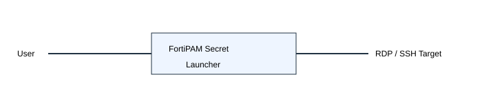
Editable diagram · Primary documentation
A FortiPAM secret launcher starts a connection to a target using stored executable/parameter definitions so the user can access the resource without viewing or copying the managed password. This changes the security boundary: authorization grants use of the secret through a controlled session, not necessarily disclosure of the secret itself. In proxy mode, FortiClient browsing can establish a ZTNA tunnel to FortiPAM before target access.
RDP launch behavior depends on security level. NLA uses CredSSP; TLS uses RDP over TLS; Restricted Admin Mode can prevent reusable credentials from being transmitted to the remote server when supported. A launcher failure therefore has multiple boundaries: secret/policy authorization, launcher definition, FortiClient/ZTNA path, target reachability, and target authentication/security-level compatibility.
Useful evidence includes FortiPAM session/audit records, launcher type and parameters, target protocol negotiation, and whether the target accepts the configured RDP mode. Repeatedly resetting the password is poor remediation when the failure occurs before target authentication. Also note Fortinet documents rate protection against multiple launches from the same user within one second and platform-specific recording limitations; these are operational dependencies, not authentication failures.
10. FortiSIEM — Windows Agent native XML moves parsing work to the Collector
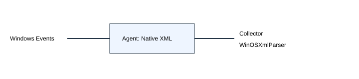
Editable diagram · Primary documentation
Modern FortiSIEM Windows Agent releases send Windows event logs in native XML and use the Collector-side WinOSXmlParser to parse fields. Fortinet introduced this to reduce Windows Agent CPU load; Collector load rises slightly because parsing moves downstream. The raw-message structure consequently changes from FortiSIEM’s older attribute/value representation to Windows XML.
This has an upgrade implication that is easy to miss: user-written custom Windows parsers must understand the XML representation before the Agent is upgraded. If collection continues but normalized custom fields disappear, prove raw XML arrival first. If raw events arrive and built-in fields parse but a custom parser fails, the failure is schema/parser compatibility, not transport. Conversely, no raw event at the Collector points upstream toward Agent policy, service, connectivity, or source log selection.
At scale, this architecture shifts resource accounting. Endpoint CPU improvement is not “free”; parsing work is centralized at Collectors. Capacity validation should therefore include Collector CPU and event throughput after Agent rollout, especially for forwarded-event workloads. The evidence chain is Windows event → Agent output → Collector raw event → parser result → normalized event → rule/incident.
11. FortiSASE — RBI executes web content remotely and returns a rendered session
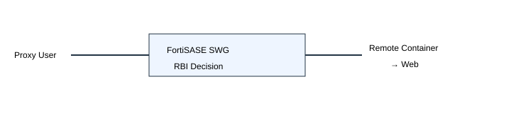
Editable diagram · Primary documentation
Remote Browser Isolation sends selected proxy-user browsing into a remote container so active web content executes away from the endpoint and the user receives a safe rendered experience. FortiSASE documents RBI as select availability and recommends Secure Browser as the alternative for new use cases. RBI requires an Advanced or Comprehensive remote-users subscription, a Fortinet security PoP, and proxy configuration.
Policy match is only the first stage. The transaction is endpoint → proxy/SWG policy → RBI decision → remote isolation container → destination site → rendered interaction back to the user. A policy that says “isolate” does not prove the container was launched. Validate entitlement, PoP/deployment prerequisite, proxy path, policy/profile match, and isolation usage/quota.
Capacity is part of behavior: isolation data limits are enforced at the instance level, and exceeding the allowance can block isolation traffic for users. Fortinet also documents an SWG SSO consideration: the CSP_REPORT proxy policy’s security profile group should use certificate inspection rather than deep inspection when RBI is combined with SWG SSO. Troubleshooting therefore distinguishes identity/proxy failure, policy mismatch, entitlement/quota denial, and remote-container execution failure.
12. Secure SD-WAN — Usage-based spillover is threshold-driven session placement
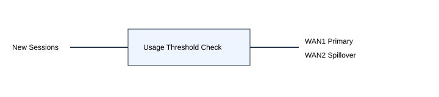
Editable diagram · Primary documentation
Usage-based (spillover) load balancing uses a preferred SD-WAN member until configured ingress/egress bandwidth thresholds are exceeded, then places additional traffic on the next member. It is fundamentally different from Performance SLA steering: a link can be healthy yet spill traffic because its usage threshold has been crossed. Likewise, a low-utilization link can be excluded for other rule/health reasons.
For troubleshooting, identify the matching SD-WAN rule, member ordering, health eligibility, configured ingress/egress thresholds, measured usage, and the path chosen for new sessions. Existing sessions should not be treated as proof of what a newly created session will do. Route-cache behavior can also preserve source/destination affinity on supported platforms, so controlled new-session tests are stronger evidence than watching one long-lived flow.
Design thresholds from usable circuit capacity and application behavior, not provider headline bandwidth alone. Too-low thresholds cause premature spillover; too-high thresholds permit congestion before overflow begins. When the complaint is “WAN2 is used even though WAN1 is up,” first decide whether the rule is health-driven, usage-driven, or another load-balancing method before changing SLA probes.
50-question graded drill
Each answer is checked independently. Feedback explains why the selected choice is or is not supported by the mechanism taught above.
Validation record
Lesson count: 12. Editable diagrams: 12. Standalone SVGs: 12. MCQ count: 50. Each question has four choices, an explicit check action, correct-answer disclosure after checking, and feedback for all four choices. Primary sources are Fortinet documentation. Current Community items are scenario/operational evidence only. Answer positions were not length-signaled; however this run intentionally prioritizes mechanism specificity over cosmetic answer-key balancing.